Fiche 09 -- Prévention d'intrusion IDS/IPS
Définition rapide des systèmes IDS et IPS
IDS (Intrusion Detection System)
Un IDS est un système de détection d'intrusion qui surveille le réseau ou les systèmes pour détecter des activités malveillantes ou non autorisées. Il analyse le trafic réseau ou les logs des systèmes et alerte les administrateurs lorsqu'une menace potentielle est identifiée. L'IDS est passif et ne bloque pas les attaques, mais fournit des informations précieuses pour la réponse aux incidents.
IPS (Intrusion Prevention System)
Un IPS est un système de prévention des intrusions qui surveille également le réseau pour détecter des activités malveillantes, mais en plus, il prend des mesures proactives pour empêcher ces menaces. Lorsqu'une activité suspecte est détectée, l'IPS peut bloquer le trafic ou interrompre la connexion afin de prévenir des dommages potentiels. L'IPS est considéré comme actif, car il protège activement le réseau contre les intrusions.
Présentation générale
Les équipements Stormshield Network Security sont équipés nativement d'un module de prévention d'intrusion nommé ASQ (Active Security Qualification). Chaque paquet reçu par le pare-feu SNS sera soumis à un ensemble d'analyses à commencer par la vérification du protocole IP. Le rôle principal de l'ASQ est de s'assurer de la conformité du paquet par rapport aux protocoles utilisés de la couche IP jusqu'à la couche applicative (grâce aux plugins) et aux signatures contextuelles (ou Patterns). C'est également l'ASQ qui est en charge de filtrer les flux et d'appliquer une opération de NAT si nécessaire.
Intégré à la pile réseau du système d'exploitation FreeBSD, le moteur de prévention d'intrusion ASQ dispose d'un accès privilégié aux ressources matérielles (CPU, mémoire et carte réseau).
Ce système de prévention d'intrusion assure le filtrage des flux ainsi que leur analyse : dès les couches de transport et jusqu'aux couches applicatives, il applique des contrôles génériques de conformité, ainsi que des contrôles ciblés et comportementaux. Les opérations de NAT ainsi que certaines opérations de routage spécifique sont également prises en charge par ce moteur.
Ces analyses sont appliquées directement sur les connexions cherchant à traverser la pile réseau du système.
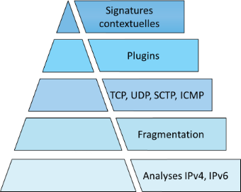
Le système de prévention d'intrusion ou IPS (Intrusion Prevention System) détecte et bloque les tentatives d'attaques des applicatifs grâce à des analyses contextuelles et comportementales complétées par une identification par signatures. Cette association présente deux bénéfices majeurs :
- il permet de réaliser un traitement préventif sur toutes les couches de communication (du réseau à l'application) fournissant ainsi une réelle protection 0-day ;
- l'usage des contextes applicatifs limite le nombre de signatures à examiner et réduit ainsi les risques de faux positifs tout en optimisant les temps de traitements pour procurer des performances optimales.
Les signatures utilisées par le moteur de prévention d'intrusion SNS sont construites pour détecter des attaques identifiables mais également leurs variantes potentielles. À titre d'exemple, la signature contextuelle sur une injection SQL par une commande SELECT (http:url:decoded:95) permet de contrer plus de 1 540 variantes d'attaques. En plus de maintenir un espace de stockage contenu, cette technique permet d'optimiser les temps de traitement et propose une protection contre de futures attaques basées sur les mêmes principes.
La mise à jour des bases de signatures du moteur de prévention Stormshield Network Security est assurée indépendamment de la mise à jour du firmware pour garantir une actualisation périodique et automatique afin de rester constamment protégé contre les nouvelles attaques.
Cette fonctionnalité de mise à jour automatique se nomme « Active Update » ; elle permet également d'ajouter de nouveaux contextes pour intégrer de nouvelles catégories de signatures contextuelles.
Les différents types d'analyses
Au-delà du simple classement [niveau réseau][niveau applicatif], un pare-feu SNS protège le réseau selon trois familles d'analyses :
- l'analyse protocolaire : elle assure la conformité des flux réseau vis-à-vis des standards de communication (IP, TCP, UDP, etc.) ainsi que la conformité aux protocoles applicatifs (HTTP, FTP, etc.) grâce aux contrôles appliqués par les contextes applicatifs,
- l'analyse statistique : basée sur des études statistiques du trafic transitant par le pare-feu, cette analyse détecte des comportements assimilables à du scan de ports, à du SYN flooding, ou encore à des tentatives de DoS (Denial of Service) par maintien de multiples connexions annonçant des petites fenêtres (SockStress),
- l'analyse par signatures contextuelles : elle vient compléter les contrôles de conformité sur le trafic. Cette analyse permet de se protéger de tentatives d'attaques visant spécifiquement un protocole et une implémentation cliente ou serveur, mais sans toutefois recourir à une inconformité au standard de communication. Elle s'appuie sur des bases de signatures construites par Stormshield, maintenues quotidiennement et mises à disposition sur les serveurs Active Update.
Les niveaux d'inspection de sécurité
Chaque paquet reçu par le pare-feu SNS est soumis à la politique de filtrage.
Info
Par défaut, l'analyse IPS (Intrusion Prevention System : système de prévention d'intrusion) est appliquée, ce qui signifie que le pare-feu SNS est capable de détecter une anomalie et de bloquer le paquet correspondant.
D'autres niveaux d'inspections peuvent être utilisés, à des fins de tests ou par nécessité : par exemple si on contacte un serveur ne respectant pas la RFC des protocoles qu'il gère.
Ces niveaux sont à sélectionner dans la colonne Inspection de sécurité de la règle de filtrage concernée.
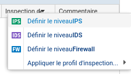
-
IPS : Détecter et bloquer (choix par défaut).
-
L'ASQ va soumettre le paquet à l'ensemble des couches qu'il est capable d'analyser et le bloquer en cas d'anomalie.
-
IDS : Détecter. L'ASQ effectue une analyse similaire à l'IPS sauf que le paquet est toujours autorisé. C'est un profil permettant de faire un audit rapide pour une règle de filtrage donnée.
-
Pare-feu : ne pas inspecter. L'ASQ ne va effectuer que très peu d'analyses sur le paquet reçu. Il se comporte comme un simple routeur filtrant.
L'ASQ est composé de 10 configurations (également nommées profils IPS). Chacune de ces configuration peut être éditée en fonction des besoins de l'administrateur.
Configuration des profils d'inspection
La configuration par défaut, comme indiqué dans le menu Configuration ⇒ Protection applicative ⇒ Profils d'inspection, applique les profils IPS_00 et IPS_01 respectivement aux connexions entrantes (paquet dont l'adresse IP source ne fait pas partie d'un réseau protégé) et aux connexions sortantes (paquet dont l'adresse IP source fait partie d'un réseau protégé).
Si des flux sains déclenchent des alarmes, il sera sûrement nécessaire de modifier les paramètres de l'ASQ pour ne pas bloquer la production. Dans ce cas, les modifications doivent être faites au plus spécifique. De préférence dans un profil dédié qui sera appliqué sur les règles identifiant précisément le trafic concerné.
Il est alors possible, dans la table de filtrage, de forcer l'utilisation d'un profil ASQ spécifique depuis la colonne Inspection de sécurité.
Par défaut, l'IPS est actif sur toutes les règles de filtrage en mode de détection automatique du protocole. Afin de mieux inspecter les flux, il est recommandé de qualifier manuellement le type de protocole si le port utilisé n'est pas standard. L'IPS risquerait de ne pas détecter correctement l'application.
- Les profils sont configurables et administrables depuis les menus Protocoles et Applications et protections sous Configuration ⇒ Protection applicative.
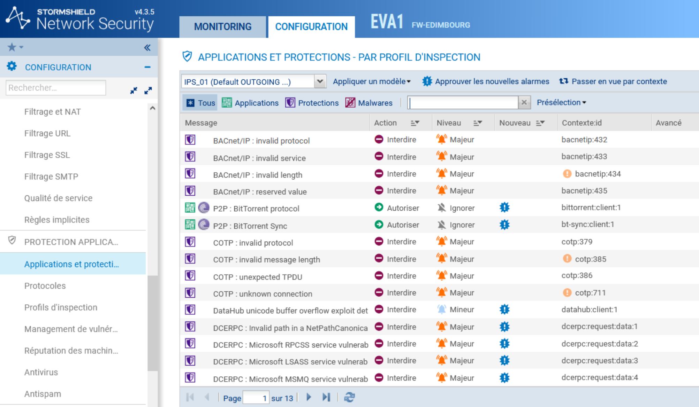
Par défaut, la liste des évènements est affichée en vue par profil d'inspection. Pour tous les évènements, une action et un niveau d'alerte sont pré-paramétrés :
-
Action
- Autoriser : le moteur de prévention d'intrusion laisse passer le paquet correspondant à l'alarme ;
- Interdire : le moteur de prévention d'intrusion bloque le paquet correspondant à l'alarme.
-
Niveau
- Majeur : le moteur de prévention d'intrusion émettra une alarme majeure sur détection de l'évenement ;
- Mineur : le moteur de prévention d'intrusion émettra une alarme mineure sur détection de l'évenement ;
- Ignore : le moteur de prévention d'intrusion n'émettra aucune alarme sur détection de l'évenement. L'action définie sera donc appliquée silencieusement.
Tri sur les trois catégories d'alarme
Des boutons vous permettent d'effectuer un tri sur les alarmes du profil d'inspection. Les 3 catégories dans lesquelles ces alarmes sont réparties sont Applications, Protections et Malwares. La sélection s'effectue par les 3 boutons du même nom :
- Applications : ce type d'alarme est levé par l'utilisation d'applications courantes. Cette sélection permet l'élaboration d'une politique de sécurité applicative.
- Protections : ces alarmes sont levées suite à l'analyse effectuée par le moteur IPS : elles résultent du blocage d'attaques connues ou d'utilisations anormales des protocoles conformément aux RFC.
- Malwares : ces alarmes sont basées sur les signatures connues de logiciels malveillants, reconnus par des types d'activité suspects. Il est conseillé d'examiner les machines à l'origine de cette catégorie d'alarmes.
Filtrage sur mot clé dans la zone « rechercher »
Il peut être intéressant de filtrer sur un mot clé (à noter qu'au passage de la souris un texte explicatif concernant l 'évènement apparaît) :
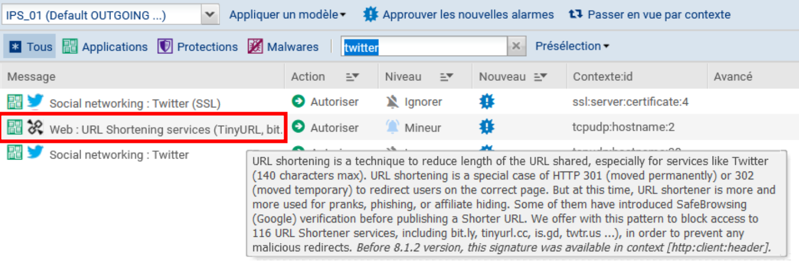
Un bouton d'aide permet aussi d'avoir une explication (en français) :
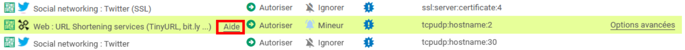
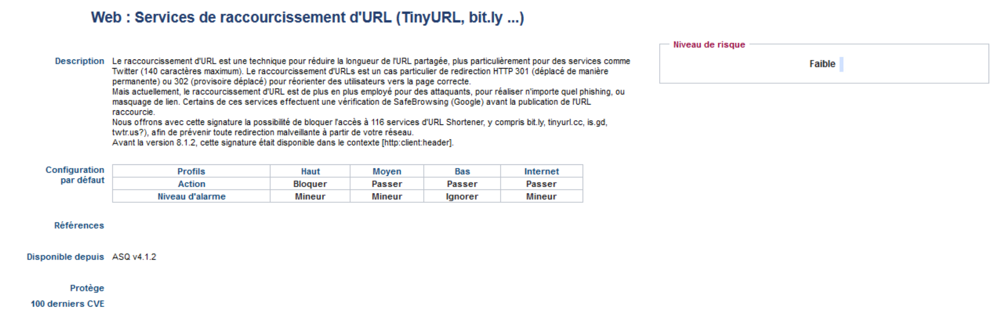
Présélection
Cette liste contient les alarmes générées par un trafic relatif à des familles d'applications. Vous pouvez effectuer un tri et n'afficher que les alarmes faisant partie d'un certain nombre de catégories (BYOD, Stockage en ligne, E-mail, Jeu, Communication, Multimédia, Peer to peer, Accès à distance, Réseaux sociaux, Web).
Info
Pour afficher les colonnes Signatures, Modèle et Profil applicatif, cliquez sur la flèche apparaissant au survol de l'intitulé d'une colonne et cochez les cases correspondantes proposées dans le menu Colonnes.
Mise à jour des signatures contextuelles
Les signatures contextuelles sont nombreuses et peuvent être mises à jour quotidiennement. Les nouvelles signatures téléchargées (signalées par un drapeau bleu « Nouveau ») sont appliquées automatiquement (sans l'approbation de l'administrateur) aux flux analysés avec l'action et le niveau d'alerte définis par défaut.
- Se rendre dans le menu Protection applicative, Profils d'inspection, zone nouvelles alarme. L'option Appliquer le modèle par défaut aux nouvelles alarmes est cochée ⇒ celles-ci se mettront à jour automatiquement et seront livrées avec la signature Stormshield Network.
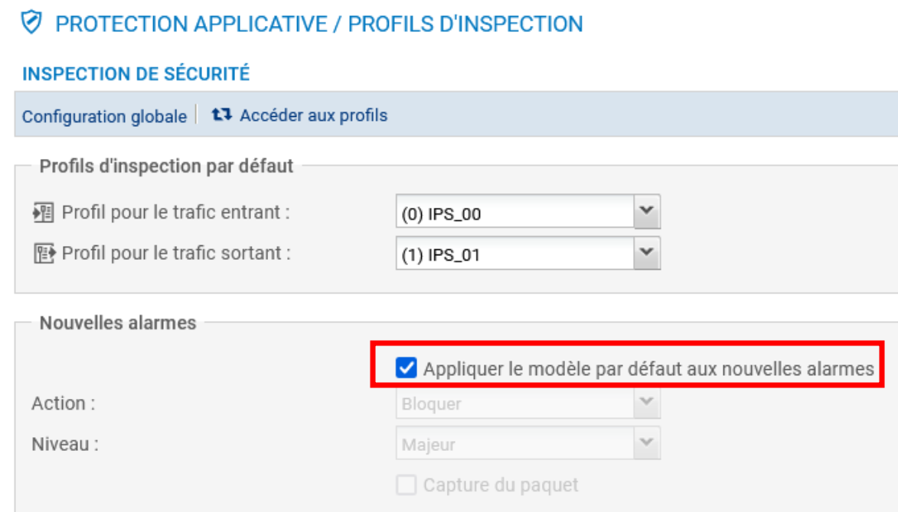
- Si vous souhaitez les appliquer vous-mêmes, décocher la case et définir les paramètres des champs suivants.
Par ailleurs, suite à l'examen des actions et niveaux d'alerte proposés, l'administrateur peut approuver ces évènements pour en faire disparaître le marqueur « Nouveau ». C'est alors l'action définie sur la ligne de l'alarme qui s'applique.
Info
Il est possible d'approuver une sélection de signatures en une seule fois en utilisant le bouton « approuver les nouvelles alarmes ».
Appliquer un modèle
Plusieurs modèles permettent de configurer le profil des alarmes en paramétrant leur action (Autoriser ou Interdire) et leur niveau (Ignorer, Mineur ou Majeur).
Les modèles BASSE, MOYENNE et HAUTE se différencient essentiellement par l'action des alarmes de type Protections, comme les alarmes relatives aux réseaux \"peer-to-peer\" ou aux messageries instantanées.
Le modèle INTERNET désactive les alarmes pouvant gêner l'utilisation classique d'Internet, souvent due à de mauvaises pratiques trop répandues pour être interdites. Un exemple est l'alarme levée en cas d\'URL contenant des caractères non ASCII.
Par défaut, le profil (1) IPS_01 est basé sur le modèle INTERNET (la plupart des alarmes sont configurées avec l'action Autoriser, quand elles ne présentent pas de danger pour le réseau interne), étant destiné au trafic dont l\'adresse IP source fait partie d\'un réseau protégé. Les autres profils (dont le trafic entrant) sont configurés sur le modèle MOYENNE qui assure un niveau de sécurité standard compromis entre sécurité et blocage excessif ; il est appliqué par défaut au trafic entrant..
Les deux autres modèles sont :
- Basse : les alarmes les moins critiques sont configurées avec l'action Autoriser.
- Haute : la majorité des alarmes sont configurées avec l'action Bloquer
Chaque évènement détectable par la prévention d'intrusion est associé à une alarme configurable.
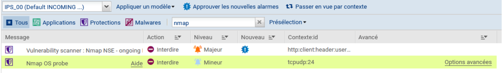 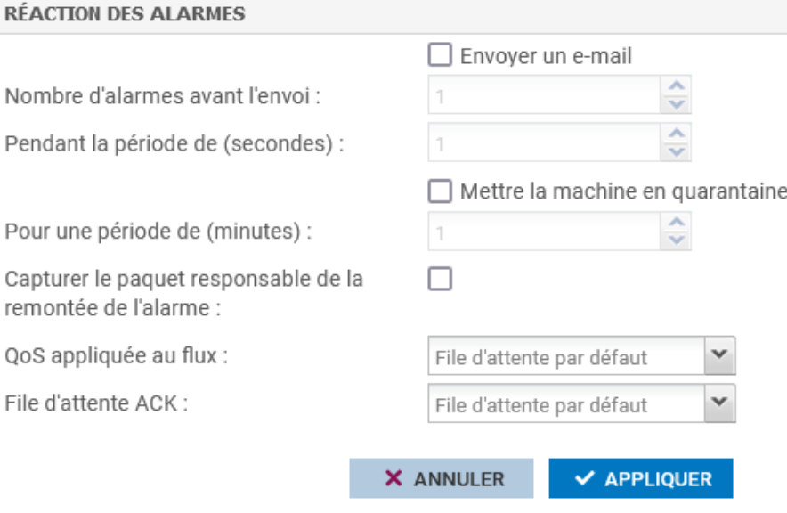
Les alarmes globales
Il existe quelques évènements pour lesquels le paramétrage est global à tous les profils. Ce sont principalement des évènements détectés avant l'évaluation des règles de filtrage. Or la sélection d'un profil protocolaire ou applicatif s'effectue pendant le processus d'évaluation des règles de filtrage auxquelles sont associées les profils d'inspections. C'est, par exemple, le cas pour l'évènement « Usurpation d'adresse IP » dont la vérification intervient bien avant l'examen du stateful et du filtrage.
Les alarmes non configurables
La configuration des actions de certaines alarmes n'est pas possible. Il s'agit pour la plupart d'évènements particuliers qui sont liés à une information à postériori de détection d 'un évènement (scan de port), d'une information sur les mécanismes enclenchés pour la poursuite des analyses (désynchronisation du trafic TCP) ou encore d'un évènement trop en marge des standards de communication pour permettre la poursuite des analyses (Attaque Xmas tree). Les alarmes non configurables sont des alarmes globales.
**Ci-dessous, l'évènement pour un scan de port : **
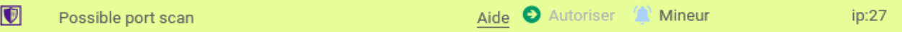
Documents
Document 1 : Les analyses de sécurité
Ce qui suit n'est qu'un résumé. Pour plus de détails, il est nécessaire de se référer à la documentation officielle du produit
1.1 Analyse protocolaire IP
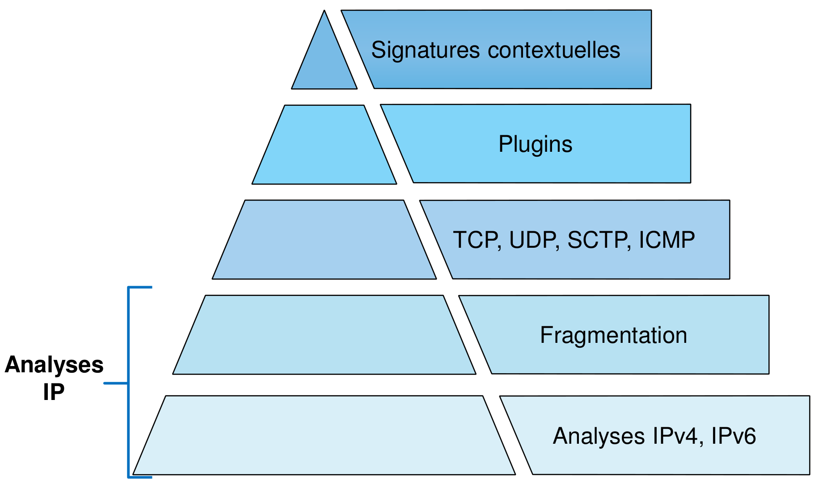
Le moteur de prévention d'intrusion Stormshield Network démarre ses contrôles à la couche réseau IP :
-
Les analyses de conformité du protocole IP : vérifications du numéro de version du protocole IP et la conformité des options positionnées, vérification de la taille annoncées dans l'en-tête IPv4 et de la taille effective de la charge, comparaison de la somme de contrôle (checksum) annoncée et la valeur de cette somme qui est recalculée
-
Contrôle de légitimité des sources (anti usurpation) : Le mécanisme de protection contre l'usurpation d'adresse (anti-spoofing) permet de détecter une incohérence entre l'adresse IP source du paquet reçu et l'interface réseau sur laquelle il se présente.
-
Mise en quarantaine de machines ou de connexions : les entrées de la quarantaine (liste noire) permettent de bannir toute communication, de manière bidirectionnelle, entre deux entités IP (hôte avec hôte, hôte avec réseau, réseau avec réseau et même hôte ou réseau avec « Any »). On distingue les listes suivantes :
- liste noire statique : il est possible, en CLI, de créer des entrées statiques dans la liste de quarantaine pour bannir toute communication traversante entre des entités IP à définir par les objets leur correspondant.
- Lliste blanche : une liste blanche (WhiteList ou ByPass ASQ), à définir en CLI, permet de contourner les contrôles ASQ pour toute communication entre les couples d'objets déclarés.
- liste noire dynamique : le moteur de prévention d'intrusion Stormshield Network Security permet de placer des machines en quarantaine afin que leurs trafics soient bloqués.
Depuis le menu de configuration des alarmes dans le module « Protection applicative », il est possible d'ajouter une réaction supplémentaire sur réalisation d'un évènement. Ainsi, toute machine déclenchant cet évènement est immédiatement placée en quarantaine pour la durée choisie.
-
La fragmentation IP
-
Les attaques par fragmentation IP
1.2 Analyse protocolaire sur la couche transport
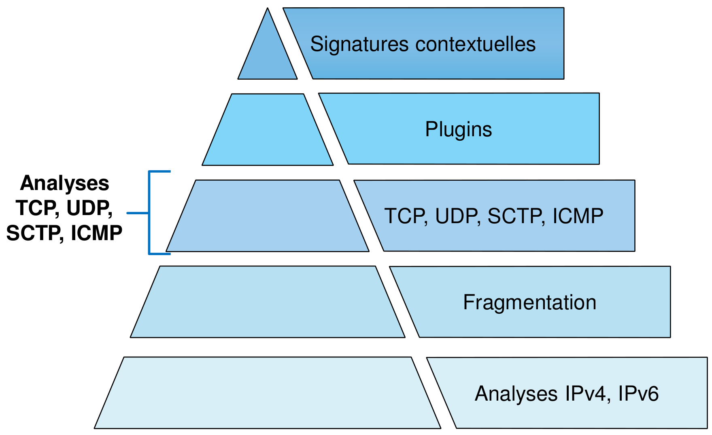
Firewall stateful
La conservation de l'état des sessions permet de contrôler leur conformité aux standards de communication au fil de leurs évolutions et pendant toute leur durée de vie. On parle de suivi « stateful » ou « plein état ». Les mécanismes et contrôles de suivi stateful permettent, non seulement, de gérer automatiquement les paquets réponses à destination de l'initiateur de la connexion, mais ils préviennent également les tentatives d'attaques par injection de paquets, en vérifiant que le contenu de chaque paquet est cohérent avec l'état de la session en cours.
État des connexions
Le moteur de prévention d'intrusion Stormshield Network applique des contrôles particuliers aux différentes étapes d'établissement, de transport de données et de clôture des connexions TCP.
Les contrôles sur ICMP consistent, quant à eux, principalement à l'identification de session TCP/UDP en rapport avec les messages ICMP retournés. Les réponses ICMP (echo reply) sont également corrélées aux requêtes (echo request) en attente conservées dans la table de stateful.
Quoique bien plus basique, le protocole UDP est également traité par plusieurs états (open ou data) pour rendre compte d'un trafic unidirectionnel ou bidirectionnel, dans le cas d'un dialogue.
Le checksum UDP (facultatif) est vérifié lorsqu'il est positionné.
Règles de filtrage
Toute nouvelle connexion est évaluée par le moteur de filtrage Stormshield Network.
Dès qu'une règle passante de filtrage correspond à la tentative de connexion, cette dernière est autorisée et le moteur de prévention d'intrusion crée un état permettant de démarrer le suivi de la connexion. Toute connexion qui n'est pas explicitement autorisée par une règle de filtrage sera bloquée implicitement sans qu''il ne soit besoin de terminer la politique de filtrage par une règle de blocage et, par défaut, sans remontée de log.
Profils applicatifs
Chaque règle de filtrage est associée à un profil d'inspection. Il est possible de choisir le profil d'inspection à utiliser pour chaque règle tel que décrit ci-dessous :
-
Lorsqu'aucun profil n'est sélectionné, ce sont les profils d'inspection par défaut qui sont utilisés.
-
- Le profil ENTRANT par défaut (00) s'appliquera aux connexions provenant d'une adresse IP source non protégée (ou non interne),
- Le profil SORTANT par défaut (01) s'appliquera aux connexions provenant d'une adresse IP source incluse dans les réseaux protégés (réseaux internes).
-
Sélection d'un profil d'inspection particulier qui sera utilisé pour cette règle (il existe 8 profils d'inspection pouvant être utilisés à la place des profils par défautet dont les paramètres sont personnalisables).
-
Sélection du mode IDS pour lequel le trafic correspondant à cette règle sera inspecté sans blocage mais émettra des alarmes en cas de trafic malveillant.
- Sélection du mode Firewall pour s'appliquer aucun contrôle de conformité et ne mettre en œuvre qu'une gestion basique du suivi d'état (gestion primaire d'ouverture et de fermeture de connexion.
1.3 Analyse applicative (les plugins applicatifs)
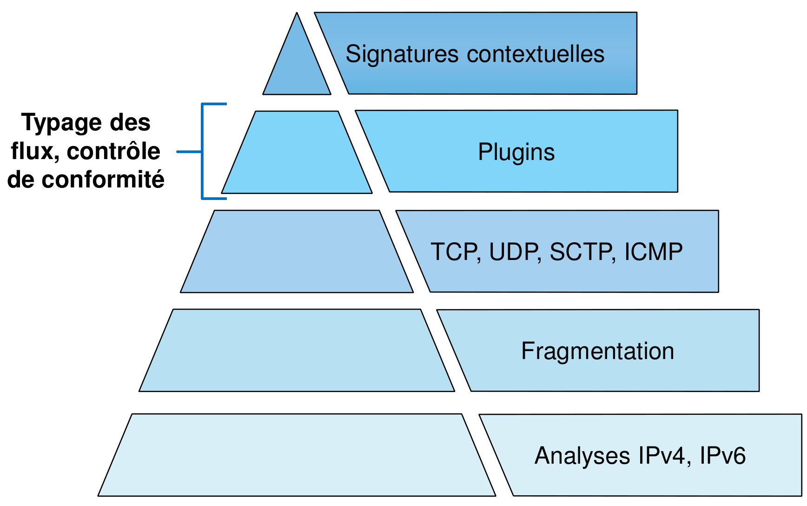
La caractérisation des flux et l'évasion de données
Dès lors que l'établissement d'un flux a été autorisé par une règle de filtrage, son suivi par les mécanismes de stateful ne suffit pas à garantir une sécurité complète et ne permet pas à l'administrateur de se prononcer strictement sur les protocoles applicatifs permis.
Il apparaît clairement que le critère HTTP désigné par un l'administrateur est traduit par TCP/80.
Donc, mis à part le protocole de transport et le numéro de port, rien ne forcerait ici les flux applicatifs traversant cette règle à se conformer au protocole HTTP.
Il serait donc possible de faire passer dans ces connexions des flux tout à fait différents de HTTP ; ceci constituerait de l'évasion de données.
Pour interdire ce phénomène, l'identification et l'analyse de la couche supérieure s'avèrent donc nécessaires.
Ces analyses complémentaires sont confiées aux plugins que le moteur de prévention d'intrusion attache aux connexions afin de définir le contexte applicatif associé.
L'attachement des plugins d'inspection peut être assuré de différentes manières :
-
Explicite:
- par implication d'un port par défaut (exemple : plugin d'analyse associé au port 80) ;
- par sélection du protocole applicatif (exemple : l'administrateur précise le protocole http dans sa règle de filtrage donc le plugin associé à ce protocole sera activé même si le port choisi est autre que le port par défaut : 80).
-
Implicite (détection automatique) : La détection du protocole applicatif est rendue possible par une comparaison du contenu des premiers paquets de données échangés entre les correspondants avec les syntaxes caractéristiques des protocoles applicatifs connus par les plugins.
Dès lors qu'un plugin applicatif est associé à un flux, il va réaliser une étude approfondie principalement des données protocolaires applicatives (aspect séquentiel des dialogues, paramètres positionnés dans les en-têtes, phases d'authentification, commandes et codes de retour, formatage des contenus protocolaires, ...).
1.4 Analyse des signatures contextuelles
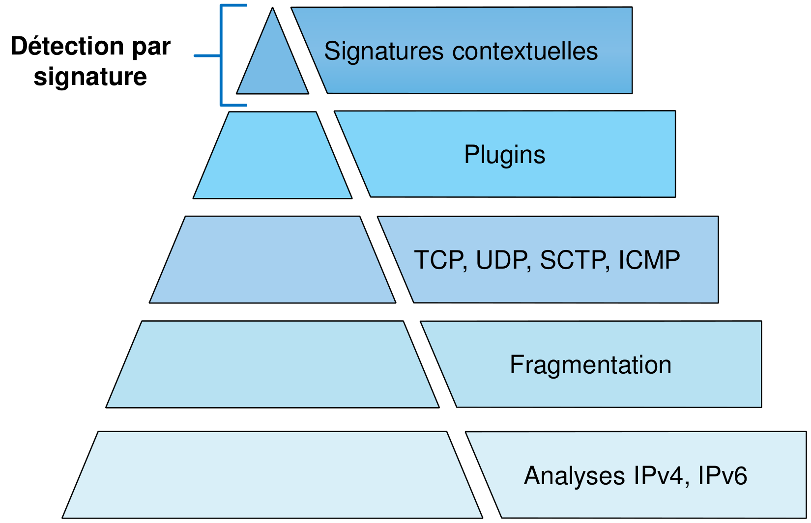
Détection par signature
Le but premier des signatures contextuelles est de caractériser des attaques ou des comportements d'attaques ne s'appuyant pas sur des inconformités protocolaires, mais sur des failles spécifiques d'implémentations logicielles. En restant conformes aux standards de communication, ces attaques ne semblent pas suspectes lors des analyses par les plugins. Il s'avère donc nécessaire de compléter les analyses protocolaires par une identification d'attaques ou de comportements d'attaques connues. En supplément, puisque les contenus des champs analysés peuvent révéler les versions de logiciels utilisés pour les communications, les signatures contextuelles offrent également la possibilité d'autoriser ou d'interdire l'utilisation de certains logiciels ou services ainsi identifiés.
Une signature contextuelle est constituée d'une ou plusieurs chaînes de caractères dont des parties peuvent être génériques et qualifier un type d'attaque dans un contexte applicatif, et d'autres parties plus spécifiques qui visent à identifier les éventuelles différentes variantes du type d'attaque qualifié.
La base des signatures contextuelles est alimentée régulièrement et publiée sur les serveurs d'Active Update pré-renseignés dans la configuration usine.
Document 2 : Analyse des logs
Pour consulter les logs :
2.1 - Inspection IPS (Intrusion Prevention System) : journalisation et alarmes
Le mode IPS est appliqué par défaut.
Il procure le niveau d'analyse le plus élevé, ainsi que le meilleur niveau de détail des informations de logs pour les connexions, dès lors qu'un suivi applicatif leur aura été appliqué.
Outre les informations de base pour une connexion (source, destination et ports), les opérations et les arguments passés dans l'applicatif sont également journalisés, ainsi que les codes de retour lorsque le protocole en fait usage.
Le nom et le numéro de la règle de filtrage qui a autorisé cette connexion, ainsi que le profil d'inspection appliqué sont également consignés.
Un évènement suspect subira un blocage et provoquera la levée d'une alarme qui, elle aussi, permettra d'identifier la règle de filtrage et le profil d'inspection qui étaient attachés à la connexion sur laquelle l'évènement s'est produit.
2.2 - Inspection IDS (Intrusion Detection System) : journalisation
Le mode d'inspection IDS est à définir explicitement dans la règle de filtrage.
Il procure le même niveau initial d'analyse que le mode IPS, avec une tolérance équivalente au paramétrage d'une action « autoriser » sur l'ensemble des évènements de type alarme.
Ce mode est donc capable de dégrader les analyses pour laisser passer des évènements majeurs qui se produiraient sur la connexion. Il pourra ainsi détacher un plugin de suivi applicatif sur réalisation d'un évènement sensible, mais également abandonner les contrôles sur les couches inférieures, lorsqu'une anomalie majeure se produit (un mauvais séquençage TCP par exemple).
2.3 - Inspection Firewall
Le mode d'inspection Firewall est à définir explicitement dans la règle de filtrage.
Après acceptation du premier paquet de connexion par la règle de filtrage, il ne procure qu'un suivi basique :
- Création d'un état sur réception d'un premier paquet valide,
- Suivi de la volumétrie des données échangées dans la connexion,
- Détection de la clôture de connexion,
- Aucune levée d'alarme en cas d'évènement anormal.